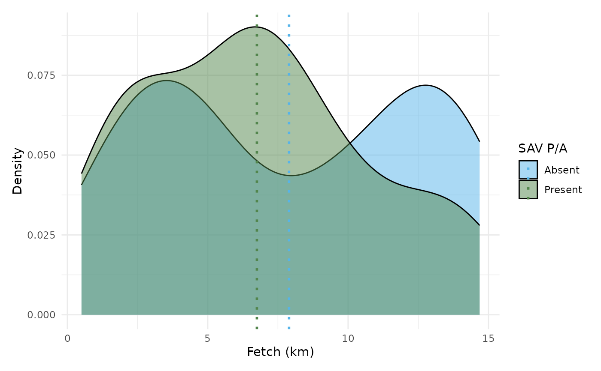
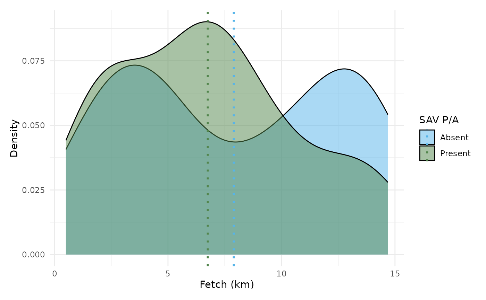

This function generates up to four plots representing the distribution of submerged aquatic vegetation (SAV) data by depth (m) and fetch (km). It visualizes SAV presence/absence (PA) and percent cover (Cover) when the corresponding columns are available in the input data.
This function generates one or two density plots for submerged aquatic vegetation (SAV) presence (green) and absence (blue) as a function of depth (m) and/or fetch (km). It includes vertical dotted lines indicating the mean values for each.
This function generates an interactive or static map of submerged aquatic vegetation (SAV) data, visualizing cover, presence/absence, depth, and fetch values.
Usage
plot_sav_distribution(
dat,
type = c("pa", "cover"),
predictors = c("depth", "fetch"),
post_hoc = TRUE,
max_depth = 30,
max_fetch = 15
)
plot_sav_density(
dat,
predictors = c("depth", "fetch"),
max_depth = 30,
post_hoc = TRUE
)
plot_sav_tmap(
study_zone,
layers = c("pa", "cover", "depth", "fetch"),
interactive = TRUE,
export_path = NULL,
post_hoc = TRUE
)Arguments
- dat
A
data.framecontaining:depth_m(optional): Numeric, depth in meters.fetch_km(optional): Numeric, fetch in kilometers.pa: Binary (0 = absent, 1 = present), indicating SAV presence/absence.
- type
character vector
Character vector specifying the type of plots to generate. Options:"pa"(default) for presence/absence plots"cover"(default) for cover percentage plots
- predictors
Character vector specifying which predictors to use. Options:
"depth"(default) for depth-based plots"fetch"(default) for fetch-based plots
- post_hoc
Logical value indicating whether to use post-hoc analyzed columns (
pa_post_hoc,cover_post_hoc) instead of raw columns (pa,cover). Default isFALSE.- max_depth
Numeric value specifying the maximum depth bin (default: 30 meters).
- max_fetch
numeric
Numeric value specifying the maximum fetch bin (default: 15 km).- study_zone
A list containing spatial objects:
polygon: Ansfpolygon object representing the area of interest.points: Ansfpoints object containing SAV-related attributes.
- layers
Character vector specifying the layers to generate. Options:
"pa"(default) for presence/absence model predictions"cover"(default) for cover percentage model predictions"depth"(default) for depth predictor values"fetch"(default) for fetch predictor values
- interactive
Logical. If
TRUE(default), generates an interactive map. IfFALSE, creates a static map.- export_path
Character. If provided, saves the map to the specified file path. Default is
NULL.
Value
A set of ggplot2 plots displayed in a grid layout.
One or two ggplot2 density plots visualizing SAV presence/absence by depth and/or fetch.
A tmap map object, optionally saved to a file.
Examples
# Example dataset
dat <- data.frame(
depth_m = runif(100, 0, 15),
fetch_km = runif(100, 0, 15),
pa_pred = sample(0:1, 100, replace = TRUE),
cover_pred = runif(100, 0, 100),
pa_post_hoc = sample(0:1, 100, replace = TRUE),
cover_post_hoc = runif(100, 0, 100)
)
# Generate all available plots
plot_sav_distribution(dat)
 # Generate only presence/absence plots
plot_sav_distribution(dat, type = "pa")
# Generate cover plots using only fetch as predictor
plot_sav_distribution(dat, type = "cover", predictors = "fetch")
# Generate plots using post-hoc analyzed data
plot_sav_distribution(dat, post_hoc = TRUE)
# Example dataset
dat <- data.frame(
depth_m = runif(100, 0, 15),
fetch_km = runif(100, 0, 15),
pa_pred = sample(0:1, 100, replace = TRUE),
pa_post_hoc = sample(0:1, 100, replace = TRUE)
)
# Generate all available plots
plot_sav_density(dat)
# Generate depth-based density plot only
plot_sav_density(dat, predictors = "depth")
# Generate fetch-based density plot only
plot_sav_density(dat, predictors = "fetch")

# Generate plots using post-hoc analyzed data
plot_sav_density(dat, post_hoc = TRUE)
# Generate only presence/absence plots
plot_sav_distribution(dat, type = "pa")
# Generate cover plots using only fetch as predictor
plot_sav_distribution(dat, type = "cover", predictors = "fetch")
# Generate plots using post-hoc analyzed data
plot_sav_distribution(dat, post_hoc = TRUE)
# Example dataset
dat <- data.frame(
depth_m = runif(100, 0, 15),
fetch_km = runif(100, 0, 15),
pa_pred = sample(0:1, 100, replace = TRUE),
pa_post_hoc = sample(0:1, 100, replace = TRUE)
)
# Generate all available plots
plot_sav_density(dat)
# Generate depth-based density plot only
plot_sav_density(dat, predictors = "depth")
# Generate fetch-based density plot only
plot_sav_density(dat, predictors = "fetch")

# Generate plots using post-hoc analyzed data
plot_sav_density(dat, post_hoc = TRUE)
 polygon <- system.file("example", "lake_erie.gpkg", package = "SAVM") |>
sf::st_read() |>
sf::st_simplify(dTolerance = 1000)
#> Reading layer `lake_erie' from data source
#> `/home/runner/work/_temp/Library/SAVM/example/lake_erie.gpkg'
#> using driver `GPKG'
#> Simple feature collection with 1 feature and 1 field
#> Geometry type: MULTIPOLYGON
#> Dimension: XYZ
#> Bounding box: xmin: -83.47975 ymin: 41.38081 xmax: -78.85269 ymax: 42.94512
#> z_range: zmin: 0 zmax: 0
#> Geodetic CRS: WGS 84
#> st_as_s2(): dropping Z and/or M coordinate
# Create sample points with attributes
set.seed(42)
points <- sf::st_sample(polygon, 100) |>
sf::st_sf() |>
dplyr::mutate(
cover_pred = runif(100, 0, 100),
pa_pred = sample(0:1, 100, replace = TRUE) |>
factor(levels = c(0, 1), labels = c("Absent", "Present")),
depth_m = runif(100, 0, 15),
fetch_km = runif(100, 0, 10),
cover_post_hoc = runif(100, 0, 100),
pa_post_hoc = sample(0:1, 100, replace = TRUE) |>
factor(levels = c(0, 1), labels = c("Absent", "Present")),
)
# Combine into study_zone list
study_zone <- list(polygon = polygon, points = points)
# Generate an interactive map
plot_sav_tmap(study_zone, interactive = TRUE)
# Generate a static map
plot_sav_tmap(study_zone, layers = "cover", interactive = FALSE)
# Save map to html file
if (FALSE) { # \dontrun{
plot_sav_tmap(study_zone, export_path = "sav_map.html")
} # }
# Visualize interactive map & save map to static png file
if (FALSE) { # \dontrun{
plot_sav_tmap(study_zone, layers = "pa", export_path = "sav_map.png")
} # }
polygon <- system.file("example", "lake_erie.gpkg", package = "SAVM") |>
sf::st_read() |>
sf::st_simplify(dTolerance = 1000)
#> Reading layer `lake_erie' from data source
#> `/home/runner/work/_temp/Library/SAVM/example/lake_erie.gpkg'
#> using driver `GPKG'
#> Simple feature collection with 1 feature and 1 field
#> Geometry type: MULTIPOLYGON
#> Dimension: XYZ
#> Bounding box: xmin: -83.47975 ymin: 41.38081 xmax: -78.85269 ymax: 42.94512
#> z_range: zmin: 0 zmax: 0
#> Geodetic CRS: WGS 84
#> st_as_s2(): dropping Z and/or M coordinate
# Create sample points with attributes
set.seed(42)
points <- sf::st_sample(polygon, 100) |>
sf::st_sf() |>
dplyr::mutate(
cover_pred = runif(100, 0, 100),
pa_pred = sample(0:1, 100, replace = TRUE) |>
factor(levels = c(0, 1), labels = c("Absent", "Present")),
depth_m = runif(100, 0, 15),
fetch_km = runif(100, 0, 10),
cover_post_hoc = runif(100, 0, 100),
pa_post_hoc = sample(0:1, 100, replace = TRUE) |>
factor(levels = c(0, 1), labels = c("Absent", "Present")),
)
# Combine into study_zone list
study_zone <- list(polygon = polygon, points = points)
# Generate an interactive map
plot_sav_tmap(study_zone, interactive = TRUE)
# Generate a static map
plot_sav_tmap(study_zone, layers = "cover", interactive = FALSE)
# Save map to html file
if (FALSE) { # \dontrun{
plot_sav_tmap(study_zone, export_path = "sav_map.html")
} # }
# Visualize interactive map & save map to static png file
if (FALSE) { # \dontrun{
plot_sav_tmap(study_zone, layers = "pa", export_path = "sav_map.png")
} # }